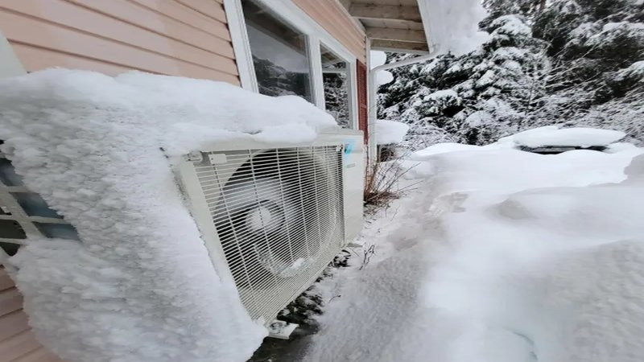

A few winters ago I decided I was going to save money by turning my thermostat way down at night. I set it to 55°F from 10 PM to 6 AM. I thought I was being smart. The house got cold, my wife complained, and the dog slept on my head. Then I got my heating bill. It was higher than the previous year. I couldn’t figure it out until I talked to an HVAC tech friend. He laughed and explained that my furnace had to work so hard to bring the temperature back up from 55 to 68 in the morning that it used more energy than if I had just kept it at 60 all night. The recovery period was too long. My furnace ran at full blast for two hours straight, losing efficiency.
The Department of Energy recommends setting your thermostat back 7‑10 degrees for eight hours a day. That’s the sweet spot. I had set it back 13 degrees. That was too much. I changed my night setting to 60°F. My bill dropped $150 that winter compared to the year before. Same house, same furnace, just a smarter schedule. I tell this story to clients who think more is always better. It’s not. Thermostat programming is about balance. If you have a heat pump, the math is even different. Heat pumps are more efficient running steadily than cycling on and off. A deep setback can force the heat pump to use expensive electric resistance strips as backup. That’s a disaster for your bill.
LED Savings
Estimate savings from switching to LED
All data stays in your browserFor a gas furnace, set back 7‑10 degrees at night or when you’re away. For a heat pump, set back only 3‑5 degrees, or use a “setback recovery” feature that ramps up slowly. If you have a programmable thermostat, use it. But don’t just set it and forget it. Adjust based on your actual schedule. If you work from home, a deep daytime setback doesn’t make sense. I had a client named Frank who set his thermostat to 62 during the day while he was at work. He came home at 5 PM and cranked it to 72. His furnace roared to life and ran for two hours. His bill was high. I suggested he change the schedule to start warming the house at 4 PM so the furnace had more time to bring the temperature up gradually. Same final temperature, less peak demand. His bill dropped $20 a month.
Another client, a woman named Linda, had a heat pump with a night setback of 10 degrees. Her backup electric strips kicked in every morning. Her electric bill was astronomical. I told her to change the night setback to 5 degrees. Her heat pump handled it without the strips. Her bill dropped $300 over the winter. The right schedule depends on your equipment and your home’s thermal mass. A well‑insulated house holds heat longer, so you can get away with deeper setbacks. A drafty house loses heat fast, so deep setbacks just make your furnace work harder.
The best way to find your optimal schedule is to experiment. Try a 7‑degree setback for a week. Look at your meter or your bill. Then try a 10‑degree setback. Compare. If you have a smart thermostat, it can track your runtime. More runtime isn’t always worse if it’s spread out. But a two‑hour continuous run is usually less efficient than two one‑hour runs. I also learned about “setback recovery” features. Many smart thermostats have an “adaptive recovery” or “smart recovery” mode. They learn how long it takes to heat your house and start early so the temperature reaches your setpoint exactly at the time you want. That’s much more efficient than blasting the furnace at full power.
Frank’s house took 90 minutes to go from 62 to 72 on a cold day. He set his thermostat to start warming at 3:30 PM. The furnace ran intermittently for 90 minutes. When he came home at 5, the house was at 72 and the furnace was off. That’s efficient. I have another client named Tony who still uses a manual thermostat. He turns it down when he leaves and up when he comes home. He’s a hero, but he’s also wasting money. A programmable thermostat costs $50 and pays for itself in a few months. I finally talked him into buying one. He called me a month later and said his bill dropped $40. He was annoyed he hadn’t listened sooner.
If you have a smart thermostat like a Nest or Ecobee, you can also set up geofencing. The thermostat knows when you leave and adjusts automatically. That’s even better. But many people leave geofencing off because they don’t trust it. I use it. It works. One more thing: don’t set your thermostat to a different temperature for every hour. That’s too complicated. You only need a few setpoints. Wake up, leave for work, come home, go to bed. Four setpoints is plenty.
My current schedule is 68 from 6 AM to 9 AM, 62 from 9 AM to 4 PM, 68 from 4 PM to 10 PM, and 60 from 10 PM to 6 AM. That’s an 8‑degree setback overnight and a 6‑degree setback during the day. My gas bill is about $70 a month in winter. My house is comfortable, and my wife stopped complaining. If you have a zoned system with multiple thermostats, the same principles apply. But you can be more aggressive in unused rooms. Set those back further.
I have a tool that helps you estimate savings from thermostat changes. It’s called the HVAC Efficiency Upgrade Analyzer.